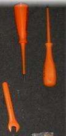

| NiveauCAP IFCA 1A |
Thème / DomaineDécouverte et inventaire de l'atelier |
Séance 1 · 2 h · Atelier ÉLECTRIQUEIdentifier et trier l'outillage |
SéquenceS0 · rentrée 2026 |
| Nom________________ |
Prénom________________ |
Date________________ |
Équipe / poste________________ |
Mise en situation professionnelle
Ordre d'intervention n° OI-2026-S0-01 : c'est la reprise en main du magasin d'outillage avant le
premier chantier de l'année. L'atelier n'a jamais été inventorié. Votre équipe reçoit un bac mélangé
d'outils électriques, plus des objets non identifiés (OVNI). Vous devez les reconnaître, les compter et
les ranger par famille : c'est la première étape avant que la classe ne reçoive ses caisses individuelles.
Objectifs — je serai capable de…
- localiser les zones et les rayons de l'atelier, et l'arrêt d'urgence ;
- nommer les familles de pinces (coupante, dénuder, bec) et de tournevis (testeur, plat, cruciforme) ;
- distinguer une pince isolée d'une pince non isolée, et expliquer simplement pourquoi ;
- lire la dimension gravée sur un tournevis ;
- trier, compter et ranger les outils de mon bac par famille, en mettant à part les OVNI et les outils d'un autre atelier (bac TRANSFERT).
Prérequis — je sais déjà…
C'est ma première séance d'atelier : aucun prérequis du métier n'est
demandé aujourd'hui. Je respecte une consigne orale, je travaille en équipe, je porte ma tenue adaptée.
Matériel
- Ce document + crayon
- 1 bac mélangé « famille électrique » + objets OVNI (par équipe)
- Fiche d'identification (feuille 2, ce document)
- Bacs de tri étiquetés par famille, + bac OVNI + bac TRANSFERT
- Fiche d'inventaire à remplir (feuille 3, ce document)
EPI et risques du jour
| Risque | Parade |
|---|
| Coupure aux faces tranchantes des pinces coupantes | Je tiens l'outil par le manche, jamais par les mâchoires ; je ne teste pas la coupe sur mes doigts. |
| Risque électrique si un outil est mal isolé | Je ne teste jamais un outil électroportatif sans autorisation ; un outil qui semble abîmé, je le signale, je ne l'utilise pas. |
Beaucoup de mes outils ont un manche recouvert d'une gaine plastique isolante :
elle empêche le courant de passer dans ma main si l'outil touche accidentellement un fil sous tension.
EPI : chaussures de sécurité (obligatoires). En cas d'incident : couper (arrêt d'urgence localisé en
début de séance), alerter le professeur, ne pas déplacer un blessé.
❄ inerWeb Édu — par F. Henninot · LPP Jacques Raynaud — Campus EQUATIO
créé le 02/09/2026 · © F. Henninot 2026 — diffusion pédagogique autorisée, mention de l'origine requise
LPP
JACQUES RAYNAUD
S0-Séance 1 · Atelier Électrique — document élève
OBSERVER — la fiche de découverte des familles électriques
Ne cherchez pas la réponse dans un livre : observez l'outil réel dans votre bac,
comparez-le à la photo, prenez-le en main. En équipe, écrivez ce que vous pensez — le nom que vous
proposez et à quoi il sert selon vous — avant que le professeur ne valide en fin d'atelier.
| Photo | Nom que je propose | Isolée ? | À quoi ça sert, selon moi |
|---|
 | | ☐ Oui
☐ Non | |
 | | ☐ Oui
☐ Non | |
 | | ☐ Oui
☐ Non | |

 Tournevis testeur : photo à venir (à prendre à l'atelier) | | tous isolés VDE | |
Photos — D'après : « 001.L'outillage du Frigoriste.pdf »
(pince coupante diagonale) ; « TD01 L'outillage.docx » (pince à dénuder) ; « M07-Outillage de base.pdf » (pince
à bec, variante bec rond) ; « Caracteristique page 139.pdf » (jeu de tournevis) ; « EDITION 2010 BA BE STAT-1.pdf »
(comparaison plat/cruciforme). La photo du jeu ne distingue pas les 6 tournevis entre eux : c'est la dimension
gravée sur chaque exemplaire qui donne son type exact (voir tableau ci-dessous).
Les objets OVNI et le bac TRANSFERT
OVNI : un outil que personne ne
reconnaît. Ne cherchez pas à deviner son nom : mettez-le à part dans le bac « OVNI », sans le ranger avec une
famille. Il sera étudié avec l'autre atelier en séance 3.
TRANSFERT : un outil que vous reconnaissez
mais qui appartient à l'atelier Façonnage (par exemple une cintreuse) : ne le comptez pas ici, posez-le dans
le bac « TRANSFERT », l'atelier Façonnage le comptera.
RÉALISER — je trie, je compte, je range
Pour chaque famille, comptez les exemplaires trouvés dans le bac, relevez isolée ?
et la dimension gravée quand elle existe, et rangez dans le bac de tri correspondant.
| Famille | Nombre trouvé | Isolée ? | Dimension/marquage lu | Bon état ? |
|---|
| Pinces coupantes diagonales | | | — | |
| Pinces à dénuder | | | — | |
| Pinces à bec demi-rond coudé | | | — | |
| Tournevis testeur | | — | | |
| Tournevis plat petit | | — | | |
| Tournevis plat moyen | | — | | |
| Tournevis plat gros | | — | | |
| Tournevis cruciforme petit modèle | | — | | |
| Tournevis cruciforme gros modèle | | — | | |
| Bac TRANSFERT (vers Façonnage) | | — | — | — |
| Objets OVNI (non rangés) | | — | — | — |
Contrôle visuel simple (abîmé / pas abîmé) : le
contrôle détaillé viendra en séance 2. Notez la dimension telle qu'elle est gravée, même si elle diffère un peu
du repère habituel.
Question — Pourquoi range-t-on les pinces à bec demi-rond coudé à part,
plutôt qu'avec les pinces coupantes ou les pinces à dénuder ?
RANGER
Je remets chaque bac de tri à son rayon, je restitue le bac mélangé vide, et j'attends
le contrôle du professeur avant de quitter mon poste.
Documents à remettre
- Ce document complété (fiche d'identification, tableau de tri, réponse)
- La fiche d'inventaire visée par le professeur
D'après : « 01-Outillages et
protections.pdf » (Dossier Matériels & Équipements, v001-2014, F. Henninot) ; « Liste outillage élèves prise en
charge caisse.xlsx » (Classe 1 CAP 2022/2023, F. Henninot).
❄ inerWeb Édu — par F. Henninot · LPP Jacques Raynaud — Campus EQUATIO
créé le 02/09/2026 · © F. Henninot 2026 — diffusion pédagogique autorisée, mention de l'origine requise